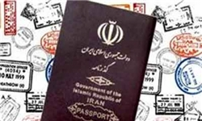

|
|

۲۰۰۰ امضا در مخالفت با محدودیتهای جدید لایحه گذرنامه برای زنان
دو شنبه7 اسفند 1391
فعالان زن امروز ۲۰۰۰ امضای جمعآوری شده در مخالفت با لایحه گذرنامه را تحویل مجلس دادند.
تغییر برای برابری: فعالان زن در اعتراض به شرط اجازه ولی زنان برای خروج از کشور با رئیس فراکسیون زنان مجلس دیدار کردند.
امروز دوشنبه ۷ اسفند تنی چند از فعالان زن از شهرهای مختلف در اعتراض به لایحه گذرنامه به همراه ۲۰۰۰ امضا زنان و مردانی که مخالف قید کمیسیون امنیت ملی جهت اخذ رضایت ولی برایزنان بالای ۱۸ سال در لایحه گذرنامه هستند به مجلس رفتند و با فاطمه رهبر، رئیس فراکسیون زنان ملاقات کردند.

فعالان زن ابتدا با طرح نگرانی خود درباره محدودیت های جدیدی که کمیسیون امنیت ملی بر مصوبه هیئت دولت در خصوص لایحه گذرنامه اعمال کرده است، خواستار برداشتن حق اجازه ولی برای خروج زنان مجرد، و اجازه همسر برای خروج زنان متاهل از کشور شدند.
آذرماه سال جاری، کمسیون امنیت ملی و سیاست خارجی مجلس شورای اسلامی تبصره ای را را ذیل لایحه اصلاح قانون گذرنامه پیشنهاد داد که طی آن دختران مجرد زیر 40 سال بدون اذن ولی قهری یا حاکم شرع، اجازه اخذ گذرنامه نداشته باشند. این لایحه پس از تجدید نظر به این شکل تغییر کرد که دختران مجرد بالای 18سال برای اخذ گذرنامه نیاز به اجازه ندارند، اما برای هر بار خروج از کشور باید به طور رسمی اجازه ولی خود را کسب کنند. زنان بیوه و مطلقه نیز از این قانون مستثنا هستند و نیازی به اجازه ولی ندارند. طرح و تصویب این لایحه مخالفتهای زیادی را از سوی فعالان زن و دیگر اقشار جامعه در پی داشت، به طوریکه رئیس کمیسیون زنان و خانوادهی مجلس چندی پیش عنوان کرد که این کمیسیون با تصویب این طرح مخالف است و طرح باید به شکل مصوبهی اولیهی دولت برگردانده شود. با اینحال تا زمان طرح این لایحه در صحن علنی هنوز نگرانیهایی در مورد تصویب این لایحه وجود دارد.
در این دیداریکی از فعالان زن به رهبر گفت:
براساس اخباری که خبرگزاری های کشور منتشر کردند که این لایحه منتفی شده است اما کماکان ما نگران هستیم چرا که می دانیم این طرح باید در صحن علنی هم مطرح بشود و هر اتفاقی ممکن است در صحن بیفتد.
رهبر در این دیدار ضمن تشکر از حضور زنانی که دغدغه امور بانوان را دارند گفت اینجا خانه ملت است و ما باید نظرات همه افراد را مد نظر قرار دهیم. خیلی از والدین ولو ۵ نفر هم به ما مراجعه کنند باید دغدغه آن ها را برای خروج از کشور دخترانشان مد نظر قرار دهیم. او به فعالان زن اطمینان خاطر داد که به پیشنهاد فراکسیون زنان به کمیسیون امنیت ملی اجازه ولی برای خروج دختران مجرد منتفی است و لایحه به مصوبه اصلی هیئت دولت برگشته است. او افزود: زمانی که لایحه در صحن بررسی می شود ممکن است نمایندگانی نظری مغایر ما داشته باشند که حق دارند نظر خود را در صحن مطرح کنند اما ما خواستار حذف شرط سن برای خروج از کشور زنان مجرد هستیم.
یکی دیگر از فعالان گفت:
این قید چرا برای پسران نیست که رهبر گفت ما پیشنهاد دادیم به جای کلمه دختر از کلمه فرزند استفاده شود که شامل هر دو جنس باشد و اگر اختلافی بین والدین و فرزندان برای خروج از کشور پیش آمد قانون رسیدگی کند.
فعالان زن در انتهای این دیدار امضاهای خود را تحویل فاطمه رهبر دادند.
بازتاب در رسانههای دیگر: